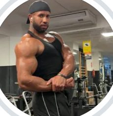
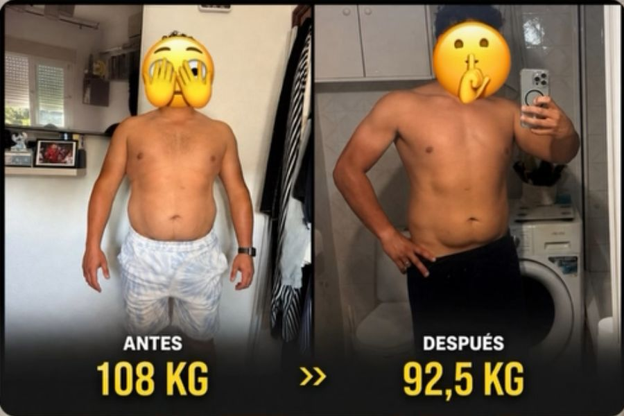
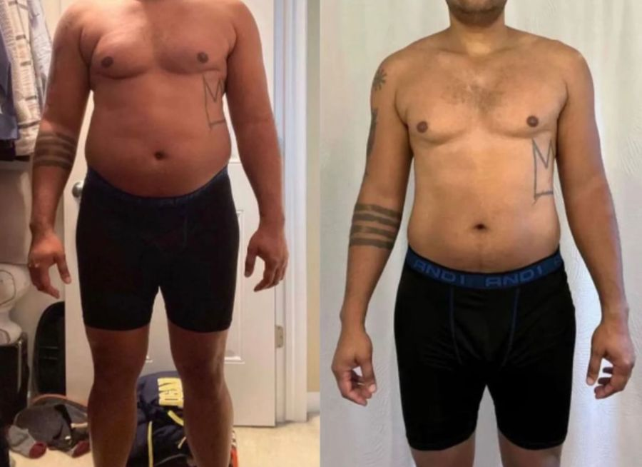
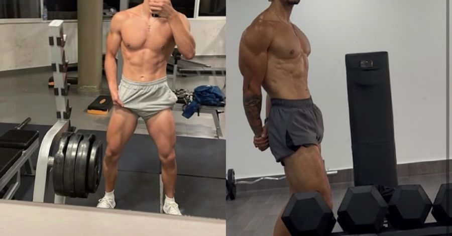
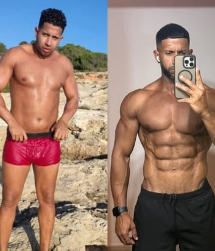
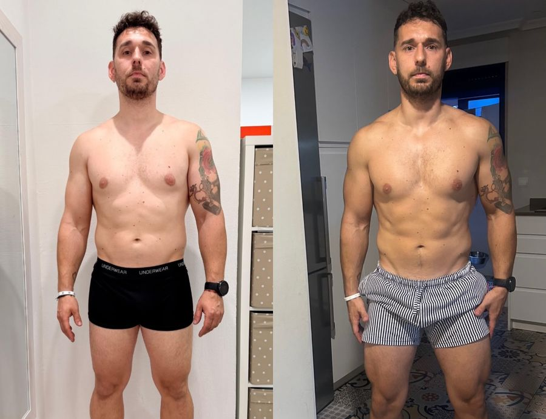
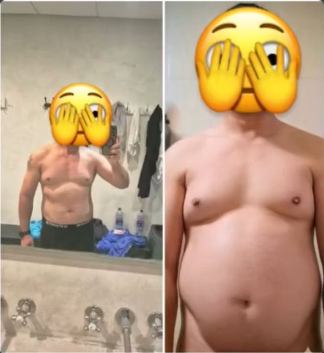

Base
Dejas de intentar cambiarlo todo de golpe. Pasos diarios, déficit controlado, fuerza 3–4 días y dormir más. Aquí llegan los primeros kilos fuera.
Lo que haces túMandar tu revisión semanal y cumplir el 80 %, también la semana mala.
Ayudo a personas de +30 con sobrepeso y jornadas largas a perder entre 10 y 20 kg sin vivir en el gimnasio ni pasar hambre, y a no volver a empezar de cero. Con el Método 90: un plan que encaja en tu día a día.
El formulario son 2 minutos. Lo leo yo y te digo por dónde empezaría en tu caso.



No es tu fuerza de voluntad ni tu horario. Te falta un plan que puedas mantener.

"No lo he hecho perfecto, pero sí constante. Que al final es lo que importa."
De pequeño hacía mucho deporte y lo dejé. Con 29 años pesaba 100 kg, comía dulce y grasa a diario y bebía alcohol todos los días, más el fin de semana. Pensaba que la gente del gimnasio eran unos creídos.
Un día no aguanté más. Entré a un gimnasio, me daba vergüenza preguntar cómo iban las máquinas y aprendía con vídeos. Mis amigos decían que no me iba a durar. Solo me apoyaba mi chica.
El primer año perdí 16 kg haciéndolo casi todo mal. Después llegó el estancamiento, alguna lesión por ego y la decisión de hacerlo bien. Hoy compito en natural y los que se reían me piden consejo. Por eso sé lo que te pasa: no te falta voluntad, te sobra plan.
Para personas de +30 con sobrepeso y jornadas largas que quieren perder entre 10 y 20 kg sin vivir en el gimnasio ni pasar hambre. Los primeros cambios, en 90 días.
Dejas de intentar cambiarlo todo de golpe. Pasos diarios, déficit controlado, fuerza 3–4 días y dormir más. Aquí llegan los primeros kilos fuera.
Lo que haces túMandar tu revisión semanal y cumplir el 80 %, también la semana mala.Sigues bajando grasa sin perder fuerza: cargas que suben, técnica cuidada y un finde que ya no rompe la semana.
Lo que haces túApuntar cada entreno y avisarme antes de un viaje o un evento.Aprendes a montar tu plato y ajustar tu semana tú solo. El objetivo: no volver a empezar de cero.
Lo que haces túPlanificar tu semana con mi revisión.Me mandas peso, fotos y sensaciones; reviso, ajusto y te digo exactamente qué hacer. También en las semanas complicadas.
Lo que no se mide no avanza. Con estas tres cosas sabemos cada semana si vas bien y qué cambiar. Sin ellas, cualquier plan es adivinar.
No necesitas subir a una tarima. Pero que tu entrenador compita en natural te dice algo: sabe bajar grasa sin perder músculo y sin atajos.
Trabajo para intentar devolverle la vida a las personas. Clientes con trabajos de hasta 12 horas y de más de 50 años.
Trabajando 12 horas al día y sin pasar hambre. Fuerza combinada con su fútbol para llegar a la pretemporada.
Hábitos diarios, entrenamiento constante y déficit controlado. Nada más y nada menos.
Llegó desesperado: entrenaba y no avanzaba. Nueva estructura para llegar descansado a cada entreno. Menos fatiga, más intensidad cuando toca y mejor recuperación.

Venía de una lesión haciendo CrossFit. Objetivo: mejorar el físico sin volver a pasar por lo mismo.

"Ya soy feliz." Y cada semana carga un poco más en el gimnasio.
Dejé la noche y el alcohol y todo. Ya soy feliz. Cada vez veo que puedo cargar más.Cliente · mensaje por chat
Si no lo hago, me fallo a mí mismo.Futbolista · 108 → 92,5 kg
Las condiciones exactas (cumplimiento y revisiones) se detallan en el contrato.
2 minutos en el formulario: tu peso, tu horario y lo que ya has probado.
Si encajamos, te llamo y te digo por dónde empezaría contigo.
Tu fase Base montada sobre tu jornada y la primera revisión en la app.
Lo leo yo personalmente. Si encajamos, te escribo para hablar.
Se baja con déficit, sí. Pero si quieres que lo que pierdas sea grasa y no músculo, y no volver a recuperarlo, la fuerza es parte del plan. Empezamos con poco y a tu ritmo.
Sí. El plan se monta sobre tu jornada real. Mis mejores casos trabajaban hasta 12 horas al día.
No. Déficit controlado, comiendo lo que te gusta. Pasar hambre es lo que hace que lo dejes al mes.
A mí también. No se prohíbe: se encaja dentro del plan para que no termines en un atracón.
No. Lo que cuenta es el total de lo que comes en el día y la semana, no la hora.
No la necesitas tanto como crees. Necesitas compromisos pequeños que puedas cumplir y alguien que los revise contigo cada semana.
Si cumples los 3 innegociables y en 90 días no ves cambios, sigo contigo gratis hasta que lleguen. Queda por escrito.
Depende de tu caso y del plan que necesites. Rellena el formulario y te lo explico cuando hablemos.
O escríbeme 90 por privado en @jorgedenys_coach y te contesto yo.